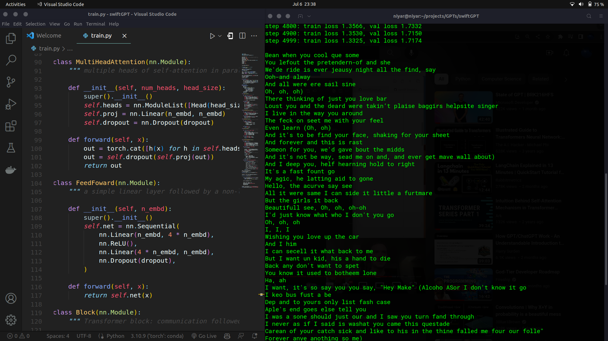
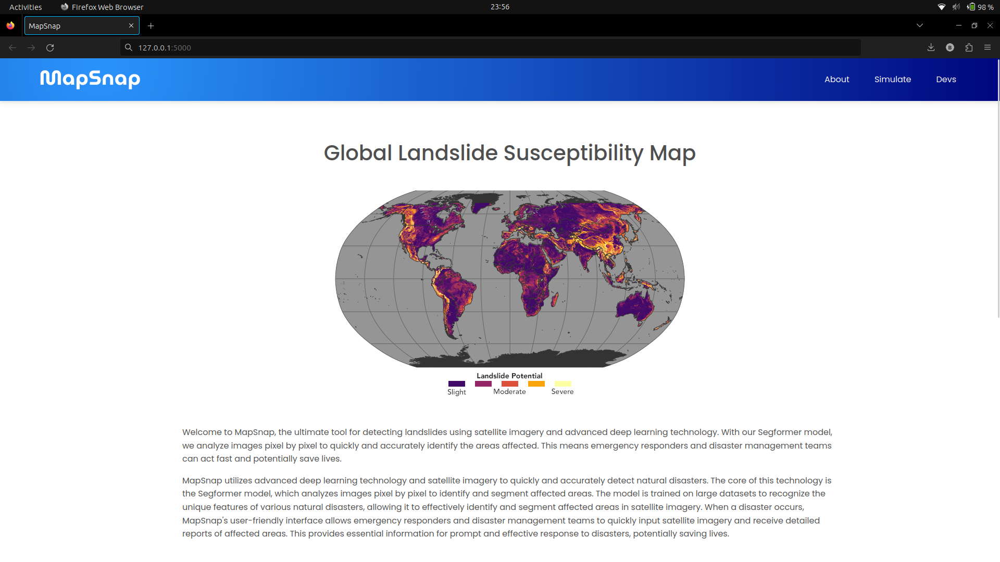
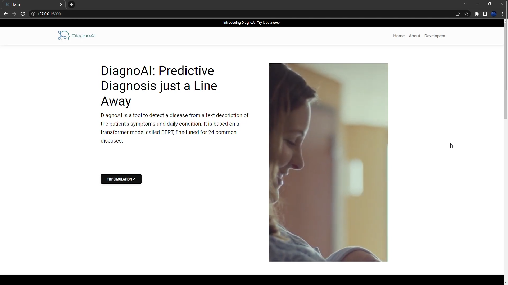
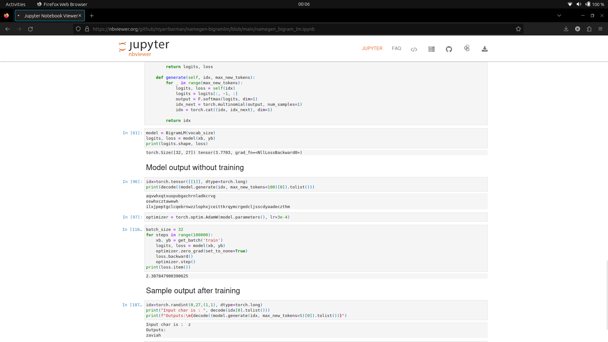
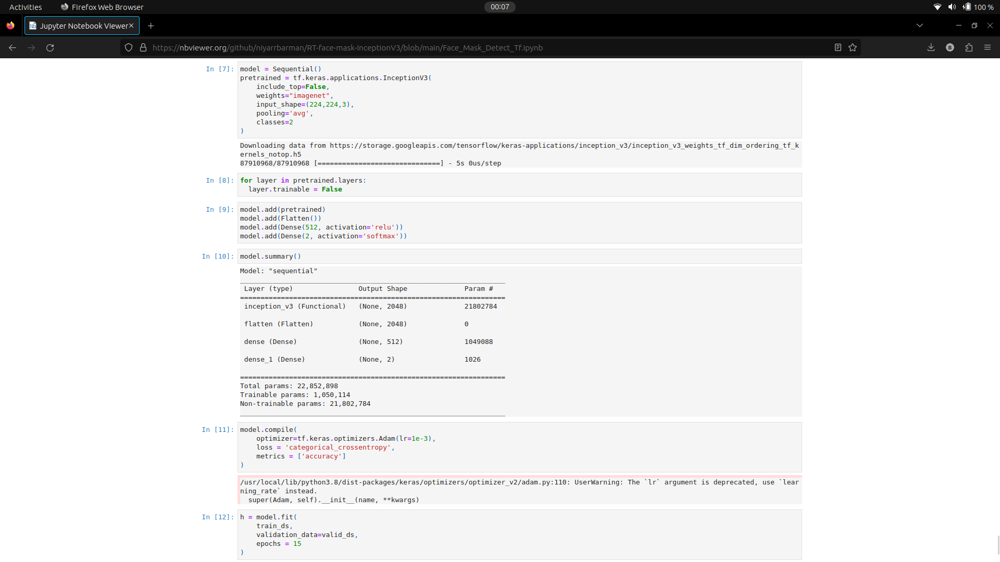
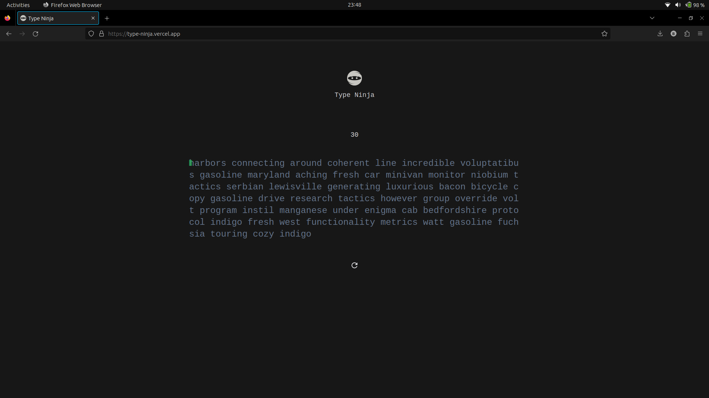
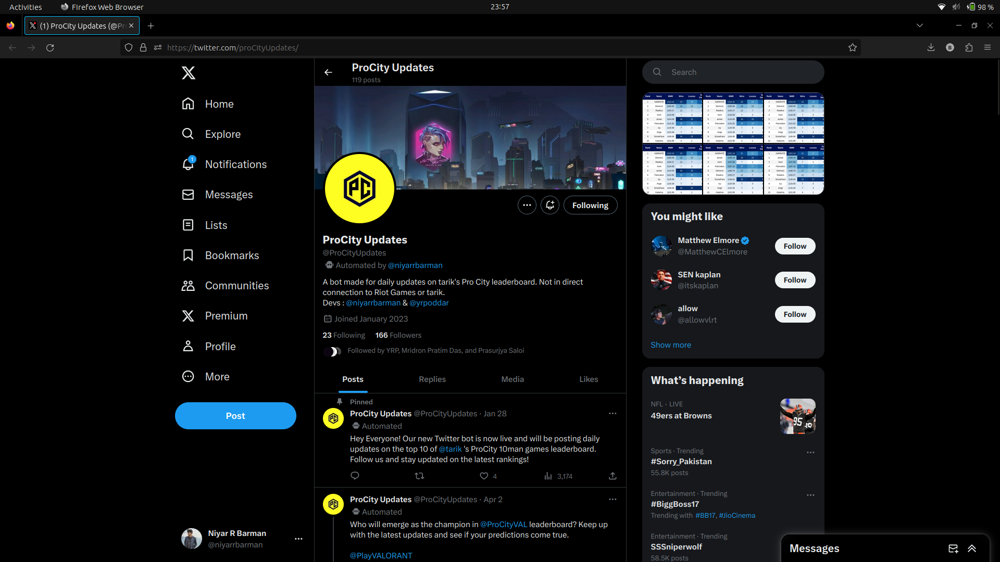
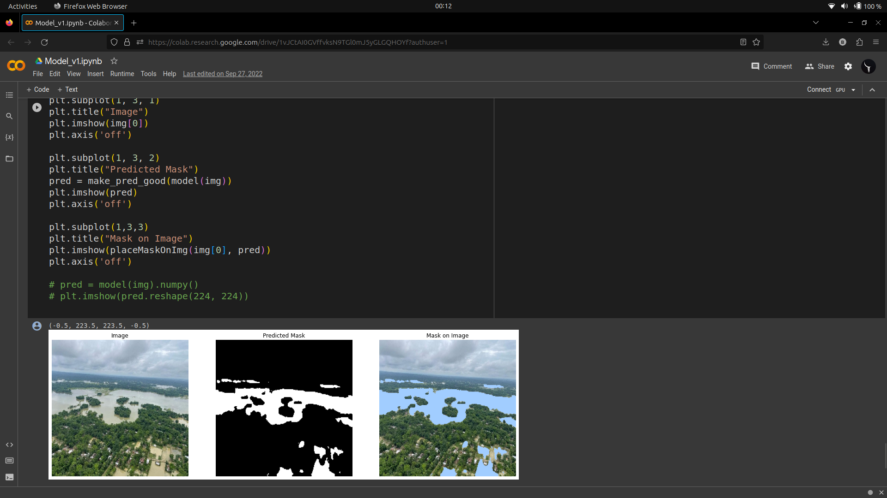
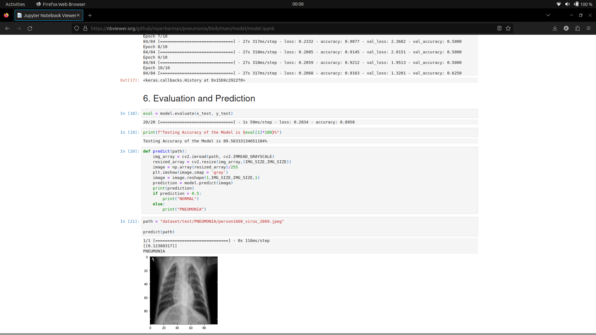

I am a student with dual pursuits: I am currently enrolled in the B.Tech program for Electronics and Communication Engineering at NIT Silchar, and simultaneously pursuing a B.S in Programming and Data Science from IIT Madras.
My interests lie in Diffusion, Large Language Models, and Natural Language Processing. My future research objectives revolves around creating language models that are more efficient and robust for real-world applications. I aim to explore their potential in enhancing natural language understanding and generating coherent and contextually relevant text.
Experience
- Research Intern - Xu Lab at Carnegie Mellon Univeristy Computational Biology Department: [October 2023 - Present]
- Research Intern - Artificial Intelligence Institute of UofSC: [January 2023 - Present]
Open Source Contributions
Publications
-

A transformer-based approach to automate disease prediction from patient descriptions
Niyar R Barman, Krish Sharma, Ranjay Hazra
IEEE CICT 2023
In this paper, we propose a transformer based approach for disease prediction using textual symptom descriptions, aiming to provide automated and accurate diagnoses. A pre-trained transformer model, is applied on a dataset of symptom descriptions and disease labels for fine-tuning. The proposed approach leverages the model’s ability to extract contextual information and long-term dependencies from text, enhancing performance in disease prediction. The dataset, collected from online sources with collaboration from healthcare professionals, includes multiple languages (English, Hindi, and Hinglish). -

Counter Turing Test CT²: AI-Generated Text Detection is Not as Easy as You May Think -- Introducing AI Detectability Index
Megha Chakraborty, S.M Towhidul Islam Tonmoy, S M Mehedi Zaman, Krish Sharma, Niyar R Barman, Chandan Gupta, Shreya Gautam, Tanay Kumar, Vinija Jain, Aman Chadha, Amit P. Sheth, Amitava Das
Full Paper: arXiv
EMNLP Main 2023
In recent developments, six distinct methodologies for AI Generated Textual Detection (AGTD) have been introduced. These encompass watermarking, perplexity estimation, burstiness estimation, negative log-likelihood curvature, stylometric variation, and classifier-based methods. Our comprehensive evaluation scrutinizes their robustness while shedding light on their inherent vulnerabilities. Moreover, we introduce the AI Detectability Index (ADI) as a pivotal contribution, serving as a quantifiable metric to systematically assess and rank Language Models (LLMs) based on their detectability attributes.
Projects
-

swiftGPT
swiftGPT
A model based on the GPT-2 architecture, specifically trained on an artist’s songs dataset to emulate their writing style -

MapSnap (Winner of Neurathon 2023)
MapSnap
A model that does semantic segmentation of landslide affected areas from satellite images using Segformer -

DiagnoAI
DiagnoAI
It is a tool to detect a disease from a text description of the patient's symptoms and daily condition. It is based on a transformer model called BERT, fine-tuned for 24 common diseases. -

nameGen
nameGen
It is a project that utilizes a Bigram Language Model to create realistic human-like names. -
Calmspace
Calmspace
It is a sentiment analysis platform that enables users to record or upload audio files of their emotions. The platform utilizes a Recurrent Neural Network (RNN) architecture, predicts the emotions conveyed in the voice recordings. -

RT Face Mask Detection
RT Face Mask Detection
It is a deep learning project that utilizes transfer learning on the InceptionV3 model to accurately detect whether a person is wearing a face mask or not in real-time. -

TypeNinja
TypeNinja
It is an engaging typing game developed with ReactJS and TypeScript, designed to enhance your typing skills in a fun and interactive way. Try it here↗ -

ProCity
ProCity
It was a Twitter Bot programmed to automatically tweet graphical updates for the top 10 players in tarik's 10 man custom lobbies. Active between: [Jan 28, 2023 - Apr 2, 2023]. Click here ↗ to view. -

FloodMent (4th Place in Un-Flood Assam, A MeitY Hackathon)
FloodMent
A standard fully convolutional UNet architecture with backbone model EfficientNetb2 that identifies and segments flooded areas in aerial images. -

PneumoPred
PneumoPred
A Deep CNN image classifier that takes chest x-rays as input and predicts whether or not the patient has pneumonia.